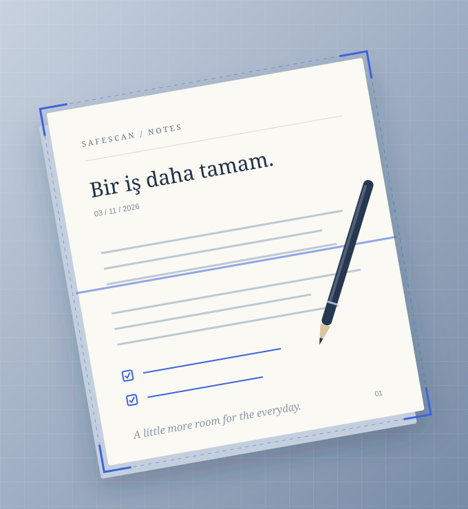
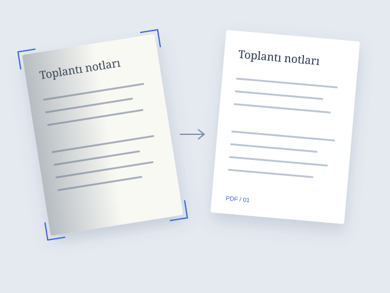
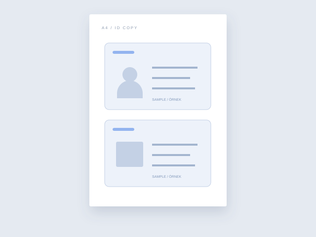
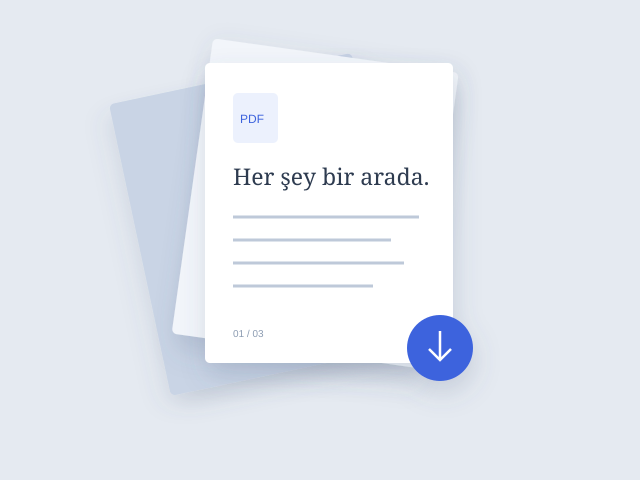

01
Belgenizi gösterin
Kamerayı açın ya da galeriden bir fotoğraf seçin. Dört köşenin de görünür olmasına dikkat edin.
✧KAĞIDA YENİ BİR DÜZEN
Bir not, bir makbuz, bir kimlik… SafeScan ile çekin, kenarlarını düzenleyin ve ihtiyacınız olan PDF’ye dönüştürün.

01 — KAĞITTAN PDF’YE
GÜNLÜK HAYATA BİRAZ DÜZEN
Masanızdaki belgelerden cüzdanınızdaki kimliğe. Ne tarayacağınıza siz karar verin.

Dört köşe. Temiz bir başlangıç.NOTLARDAN RESMİ EVRAKLARA
Fotoğrafı çekin ya da galeriden seçin. SafeScan’in önerdiği köşeleri kontrol edin; gerekirse elle ayarlayın. Perspektifi düzeltin, gölgeleri azaltın, belgenize uygun görünümü seçin.

İki yüz. Tek bir sayfa.ÖNÜ ARKASI BELLİ
Kimliğinizin ön ve arka yüzünü sırayla tarayın. Kenarlarını kontrol edin ve ikisini tek PDF sayfasında birleştirin. Yan yana ya da alt alta; yerleşimi ihtiyacınıza göre seçin.

Bir arada. İhtiyacınız olduğunda.SON DOKUNUŞ SİZDEN
Sayfaların sırasını değiştirin, belgenize bir isim verin ve PDF’nizi oluşturun. İsterseniz Belgelerim’e kaydedin, isterseniz doğrudan paylaşın veya yazdırın.
DOSYA DÖNÜŞTÜRÜCÜ
Görsellerden PDF oluşturun ya da PDF’lerinizi ihtiyacınız olan biçimde dışa aktarın.
PDF DÜZENLEYİCİ
Bir PDF seçin veya yeni taramanızla devam edin. Düzenlediğiniz dosyayı kaydedin ya da paylaşın.
MASANIZDAN CEBİNİZE
Kamerayı açın ya da galeriden bir fotoğraf seçin. Dört köşenin de görünür olmasına dikkat edin.
Önerilen kırpmayı kontrol edin. Köşeleri, ışığı ve sayfa sırasını ihtiyacınıza göre düzenleyin.
Belgenizi isimlendirin. Cihazınıza kaydedin, paylaşın ya da yazdırın. İşte bu kadar.
GİZLİLİK, EN BAŞINDAN
Belgenizi taramak için bir hesap açmanız ya da dosyanızı bir sunucuya yüklemeniz gerekmez. Tarama, köşe algılama ve PDF oluşturma cihazınızda çalışır.
DÜZEN HEP YANINIZDA
SafeScan’i cebinizde taşıyın. Belgeniz nerede olursa olsun, bir sonraki adımınız hazır olsun.
SafeScan’i App Store’dan indirebilirsiniz.Bir iş daha tamam.
Tarama, kırpma, ışık düzeltme ve PDF oluşturma cihazınızda çalışır. Bir belgeyi başka bir hizmete gönderirken o hizmet internet bağlantısı isteyebilir.
Algılama; ışık, arka plan ve fotoğrafın açısına bağlıdır. Güvenilir bir öneri bulunamazsa dört köşeyi elle ayarlayabilirsiniz.
Kaydettiğiniz PDF’ler uygulamanın cihazınızdaki özel alanında tutulur. Gerekli dosyaları uygulamayı silmeden önce dışa aktarın.
İsteğe bağlı biyometrik kilit uygulamaya erişimi sınırlar. Belge dosyalarını ayrıca şifrelemez; cihaz parolasıyla kimlik doğrulama kullanılabilir.